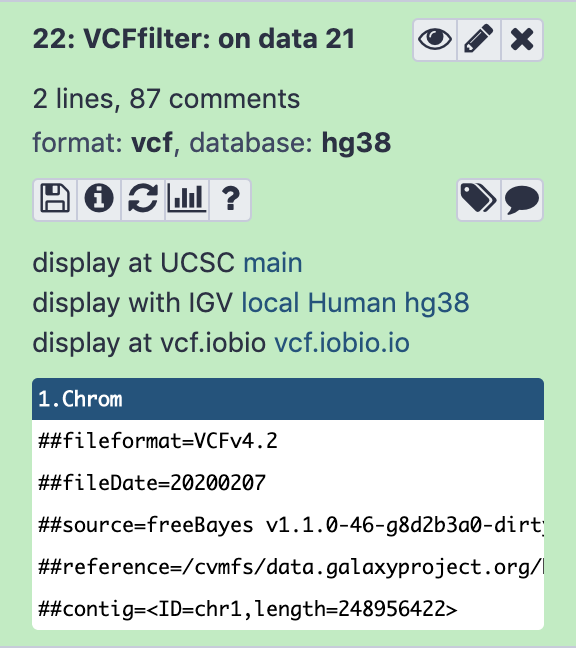

The majority of life on Earth is non-diploid and represented by prokaryotes, viruses, and their derivatives, such as our own mitochondria or plant’s chloroplasts. In non-diploid systems, allele frequencies can range anywhere between 0 and 100% and there could be multiple (not just two) alleles per locus. The main challenge associated with non-diploid variant calling is the difficulty in distinguishing between the sequencing noise (abundant in all NGS platforms) and true low frequency variants. Some of the early attempts to do this well have been accomplished on human mitochondrial DNA although the same approaches will work equally good on viral and bacterial genomes (Rebolledo-Jaramillo et al. 2014, Li et al. 2015).
As an example of non-diploid systems, we will be using human mitochondrial genome. However, this approach will also work for most bacterial and viral genomes.
There are two ways one can call variants:
By comparing reads against an existing genome assembly
By assembling a genome first and then mapping against that assembly
Figure 1: This figure from Olson et al. 2015 contrasts the two approaches.
In this tutorial we will take the first path, in which we map reads against an existing assembly. Later in the course, after we learn about assembly approaches, we will try the second approach as well.
The goal of this example is to detect heteroplasmies - variants within mitochondrial DNA. Mitochondria are transmitted maternally, and heteroplasmy frequencies may change dramatically and unpredictably during the transmission due to a germ-line bottleneck (Cree et al. 2008). As we mentioned above, the procedure for finding variants in bacterial or viral genomes will be essentially the same.
Datasets representing a child and a mother are available in Zenodo. These datasets were obtained by paired-end Illumina sequencing of human genomic DNA enriched for mitochondria. The enrichment was performed using long-range PCR with two primer pairs that amplify the entire mitochondrial genome. Samples will therefore still contain a lot of DNA from the nuclear genome, which, in this case, is a contaminant.
Check that all newly created datasets in your history are assigned datatype
fastqsanger, and fix any missing or wrong datatype assignment
tip Tip: Changing the datatype
Click on the galaxy-pencilpencil icon for the dataset to edit its attributes
In the central panel, click on the galaxy-chart-select-dataDatatypes tab on the top
Select fastqsanger
Click the Change datatype button
Checking data quality
Before proceeding with the analysis, we need to find out how good the data actually is. For this will use FastQC.
hands_on Hands-on: Assess quality of data
Run FastQCTool: toolshed.g2.bx.psu.edu/repos/devteam/fastqc/fastqc/0.72+galaxy1 on each of the four FASTQ datasets with the following parameters:
param-files“Short read data from your current history”: all 4 FASTQ datasets selected with Multiple datasets
tip Tip: Select multiple datasets
Click on param-filesMultiple datasets
Select several files by keeping the Ctrl (or
COMMAND) key pressed and clicking on the files of interest
Once the FastQC jobs runs, you will be able to look at the HTML reports generated by this tool. The data have generally high quality in this example:
Figure 2: FastQC plot for one of the mitochondrial datasets shows that qualities are acceptable for 250 bp reads (mostly in the green, which is at or above [Phred score](https://en.wikipedia.org/wiki/Phred_quality_score) of 30).
Mappingreads to a reference
Our reads are long (250 bp) so we will use BWA-MEM (Li 2013) to align them against the reference genome as it has good mapping performance for longer reads (100bp and up).
hands_on Hands-on: Map reads
Use Map with BWA-MEMTool: toolshed.g2.bx.psu.edu/repos/devteam/bwa/bwa_mem/0.7.17.1 to map the reads to the reference genome with the following parameters:
“Will you select a reference genome from your history or use a built-in index?”: Use a built-in genome index
“Using reference genome”: Human: hg38 (or a similarly named option)
“Single or Paired-end reads”: Paired
param-files“Select first set of reads”: select both -1 datasets selected with Multiple datasets
param-files“Select second set of reads”: select both -2 datasets selected with Multiple datasets
“Set read groups information?”: Set read groups (SAM/BAM specification)
“Auto-assign”: Yes
“Auto-assign”: Yes
“Platform/technology used to produce the reads (PL)”: ILLUMINA
“Auto-assign”: Yes
comment More about selecting datasets
By selecting datasets 1 and 3 as Select the first set of reads and datasets 2 and 4 as Select the second set of reads, Galaxy will automatically launch two BWA-MEM jobs using datasets 1,2 and 3,4 generating two resulting BAM files.
By setting Set read groups information to Set read groups (SAM/BAM specifications) and clicking Auto-assign we will ensure that the reads in the resulting BAM dataset are properly set.
Postprocessing mapped reads
Merging BAM datasets
Because we have set read groups, we can now merge the two BAM dataset into one. This is because read groups label each read as belonging to either mother or child.
hands_on Hands-on: Merge multiple datasets into one
Use MergeSAMFilesTool: toolshed.g2.bx.psu.edu/repos/devteam/picard/picard_MergeSamFiles/2.18.2.1 to merge the BAM datasets with the following parameters:
param-files“Select SAM/BAM dataset or dataset collection”: select both BAM datasets produced by BWA-MEMtool
“Select validation stringency”: Lenient
Removing duplicates
Preparation of sequencing libraries (at least at the time of writing) for technologies such as Illumina (used in this example) involves PCR amplification. It is required to generate sufficient number of sequencing templates so that a reliable detection can be performed by base callers. PCR has its own biases which are especially profound in cases of multi-template PCR used for construction of sequencing libraries (Kanagawa 2003).
Duplicates can be identified based on their outer alignment coordinates or using sequence-based clustering. One of the common ways for identification of duplicate reads is the MarkDuplicates utility from Picard package which is designed to identify both PCR and optical duplicates.
details More about MarkDuplicates
Duplicates are identified as read pairs having identical 5’ positions (coordinate and strand) for both reads in a mate pair (and optionally, matching unique molecular identifier reads; see BARCODE_TAG option). Optical, or more broadly sequencing, duplicates are duplicates that appear clustered together spatially during sequencing and can arise from optical/imagine-processing artifacts or from biochemical processes during clonal amplification and sequencing; they are identified using the READ_NAME_REGEX and the OPTICAL_DUPLICATE_PIXEL_DISTANCE options. The tool’s main output is a new SAM or BAM file in which duplicates have been identified in the SAM flags field, or optionally removed (see REMOVE_DUPLICATE and REMOVE_SEQUENCING_DUPLICATES), and optionally marked with a duplicate type in the ‘DT’ optional attribute. In addition, it also outputs a metrics file containing the numbers of READ_PAIRS_EXAMINED, SECONDARY_OR_SUPPLEMENTARY_RDS, UNMAPPED_READS, UNPAIRED_READS, UNPAIRED_READ DUPLICATES, READ_PAIR_DUPLICATES, and READ_PAIR_OPTICAL_DUPLICATES.
Use MarkDuplicatesTool: toolshed.g2.bx.psu.edu/repos/devteam/picard/picard_MarkDuplicates/2.18.2.2 to de-duplicate the merged BAM datasets with the following parameters:
param-file“Select SAM/BAM dataset or dataset collection”: select the merged BAM dataset produced by MergeSAMFilestool
“The scoring strategy for choosing the non-duplicate among candidates”: SUM_OF_BASE_QUALITIES
“The maximum offset between two duplicate clusters in order to consider them optical duplicates”: 100
“Select validation stringency”: Lenient
MarkDuplicates produces a BAM dataset with duplicates removed and also a metrics file. Let’s take a look at the metrics data:
What percent of read duplication are found in each read group (child and mother)?
solution Solution
The two datasets have ~6% and ~9% duplicates for child and mother, respectively.
Left-aligning indels
Left aligning of indels (a variant of re-aligning) is extremely important for obtaining accurate variant calls. For illustrating how left-aligning works, we expanded on an example provided by Tan et al. 2015. Suppose you have a reference sequence and a sequencing read:
Reference GGGCACACACAGGG
Read GGGCACACAGGG
If you look carefully you will see that the read is simply missing a CA repeat. But it is not apparent to a mapper, so some of possible alignments and corresponding variant calls include:
Alignment Variant Call
GGGCACACACAGGG Ref: CAC
GGGCAC--ACAGGG Alt: C
GGGCACACACAGGG Ref: ACA
GGGCA--CACAGGG Alt: A
GGGCACACACAGGG Ref: GCA
GGG--CACACAGGG Alt: G
The last of these is left-aligned. In this case gaps (represented by dashes) are moved as far left as possible. For a formal definition of left-alignment and variant normalization, see Tan et al. 2015.
hands_on Hands-on: Left-align indels
Use BamLeftAlignTool: toolshed.g2.bx.psu.edu/repos/devteam/freebayes/bamleftalign/1.3.1 to perform left alignment with the following parameters:
“Choose the source for the reference genome”: Locally cached
param-file“Select alignment file in BAM format”: select the BAM dataset produced by MarkDuplicatestool
“Using reference genome”: hg38
“Maximum number of iterations’: 5
Filtering reads
Remember that we are trying to call variants in mitochondrial genome. Let focus only on the reads derived from mitochondria genome by filtering everything else out.
hands_on Hands-on: Filter BAM data
Use Filter BAM datasets on a variety of attributesTool: toolshed.g2.bx.psu.edu/repos/devteam/bamtools_filter/bamFilter/2.4.1 with the following parameters:
param-file“BAM dataset(s) to filter”: select the BAM dataset produced by BamLeftAligntool
In “Condition”:
In “1: Condition”:
In “Filter”:
In “1: Filter”:
“Select BAM property to filter on”: mapQuality
“Filter on read mapping quality (phred scale)”: >=20
In “2: Filter”:
“Select BAM property to filter on”: isPaired
“Selected mapped reads”: Yes
Click on “Insert Filter”
In “3: Filter”:
“Select BAM property to filter on”: isProperPair
“Select reads with mapped mate”: Yes
Click on “Insert Filter”
In “4: Filter”:
“Select BAM property to filter on”: reference
“Select reads with mapped mate”: chrM
comment Filtering reads
Further explanation of the filters used:
mapQuality is set to ≥20. Mapping quality reflects the probability that the read is placed incorrectly using phred scale. Thus 20 is 1/100 or 1% chance that the read is incorrectly mapped. By setting this parameter to ≥20, we will keep all reads that have 1% or less probability of being mapped incorrectly.
isPaired will eliminate singleton (unpaired) reads.
isProperPair will only keep reads that map to the same chromosome and are properly placed.
reference is set to the mitochondrial chromosome, chrM.
Calling non-diploid variants
FreeBayes is widely used for calling variants in diploid systems. However, it can also be used for calling variants in pooled samples where the number of samples is not known. This is the exact scenario we have here: in our sample we have multiple mitochondrial (or bacterial or viral) genomes, but we do not know exactly how many. Thus we will use the --pooled-continuous option of FreeBayes to generate frequency-based variant calls as well as some other options highlighted below.
hands_on Hands-on: Calling variants
Use FreeBayesTool: toolshed.g2.bx.psu.edu/repos/devteam/freebayes/freebayes/1.3.1 to call variants with the following parameters:
“Choose the source for the reference genome”: Locally cached
“Run in batch mode?”: Run individually
param-file“BAM dataset”: select the BAM dataset produced by last Filtertool step
“Using reference genome”: hg38
“Limit variant calling to a set of regions?”: Limit to region
“Region Chromosome”: chrM
“Region Start”: 1
“Region End”: 16000
“Choose parameter selection level”: 5: Full list of options
“Population model options”: Set population model options
“The expected mutation rate or pairwise nucleotide diversity among the population under analysis”: 0.001
“Set ploidy for the analysis”: 1
“Assume that samples result from pooled sequencing”: Yes
“Output all alleles which pass input filters, regardless of genotyping outcome or model”: Yes
comment Population model options
The “Population model options” are one of the most important parameter choices to make when calling variants in non-diploid systems.
“Allelic scope options”: Set allelic scope options
“Ignore complex events (composites of other classes)”: Yes
comment Allelic scope options
Mitochondria has a number of low complexity regions (mononucleotide repeats). Setting the allelic scope parameters as described above will decrease noise from these regions.
“Input filters”: Set input filters
“Exclude alignments from analysis if they have a mapping quality less than”: 20
“Exclude alleles from analysis if their supporting base quality less than”: 30
comment Filter options
Setting Exclude alignments from analysis if they have a mapping quality less than to 20 (phred score of 20) will make FreeBayes only consider reliably aligned reads.
Setting Exclude alleles from analysis if their supporting base quality less than to 30 (phred score of 30) will make FreeBayes only consider high quality bases.
FreeBayes will produce a VCF dataset similar to what is shown below (you may need to scroll sideways to see it in full). It lists 25 sites of interest. For brevity, the header lines have been removed:
#CHROM POS ID REF ALT QUAL FILTER INFO FORMAT raw_child-ds- raw_mother-ds-
chrM 73 . A G 30438.6 . AB=0;ABP=0;AC=2;AF=1;AN=2;AO=949;CIGAR=1X;DP=950;DPB=950;DPRA=0;EPP=144.879;EPPR=5.18177;GTI=0;LEN=1;MEANALT=1;MQM=55.8314;MQMR=60;NS=2;NUMALT=1;ODDS=2187.64;PAIRED=1;PAIREDR=1;PAO=0;PQA=0;PQR=0;PRO=0;QA=34948;QR=37;RO=1;RPL=322;RPP=215.867;RPPR=5.18177;RPR=627;RUN=1;SAF=421;SAP=29.2075;SAR=528;SRF=0;SRP=5.18177;SRR=1;TYPE=snp;technology.ILLUMINA=1 GT:DP:AD:RO:QR:AO:QA:GL 1:226:0,226:0:0:226:8314:-739.462,0 1:724:1,723:1:37:723:26634:-2346.86,0
chrM 263 . A G 11603.3 . AB=0;ABP=0;AC=2;AF=1;AN=2;AO=364;CIGAR=1X;DP=364;DPB=364;DPRA=0;EPP=16.755;EPPR=0;GTI=0;LEN=1;MEANALT=1;MQM=60;MQMR=0;NS=2;NUMALT=1;ODDS=982.556;PAIRED=1;PAIREDR=0;PAO=0;PQA=0;PQR=0;PRO=0;QA=13201;QR=0;RO=0;RPL=276;RPP=213.858;RPPR=0;RPR=88;RUN=1;SAF=172;SAP=5.39653;SAR=192;SRF=0;SRP=0;SRR=0;TYPE=snp;technology.ILLUMINA=1 GT:DP:AD:RO:QR:AO:QA:GL 1:108:0,108:0:0:108:3896:-350.812,0 1:256:0,256:0:0:256:9305:-837.344,0
chrM 310 . TCC CCC 4471 . AB=0;ABP=0;AC=2;AF=1;AN=2;AO=150;CIGAR=1X2M;DP=171;DPB=180.333;DPRA=0;EPP=7.70068;EPPR=4.45795;GTI=0;LEN=1;MEANALT=2.5;MQM=59.88;MQMR=60;NS=2;NUMALT=1;ODDS=407.373;PAIRED=1;PAIREDR=1;PAO=11;PQA=237;PQR=0;PRO=0;QA=5147;QR=194;RO=6;RPL=113;RPP=86.6265;RPPR=8.80089;RPR=37;RUN=1;SAF=35;SAP=95.6598;SAR=115;SRF=1;SRP=8.80089;SRR=5;TYPE=snp;technology.ILLUMINA=1 GT:DP:AD:RO:QR:AO:QA:GL 1:54:0,49:0:0:49:1645:-150.867,0 1:117:6,101:6:194:101:3502:-315.963,0
chrM 513 . GCACACACACAC GCACACACACACAC 2095.84 . AB=0;ABP=0;AC=2;AF=1;AN=2;AO=109;CIGAR=1M2I11M;DP=150;DPB=172.167;DPRA=0;EPP=109.173;EPPR=6.05036;GTI=0;LEN=2;MEANALT=3.5;MQM=60;MQMR=60;NS=2;NUMALT=1;ODDS=225.991;PAIRED=1;PAIREDR=1;PAO=5;PQA=101.5;PQR=101.5;PRO=5;QA=3824;QR=1196;RO=35;RPL=19;RPP=103.436;RPPR=4.56135;RPR=90;RUN=1;SAF=80;SAP=54.8268;SAR=29;SRF=24;SRP=13.4954;SRR=11;TYPE=ins;technology.ILLUMINA=1 GT:DP:AD:RO:QR:AO:QA:GL 1:34:5,28:5:163:28:996:-74.9521,0 1:116:30,81:30:1033:81:2828:-161.475,0
chrM 750 . A G 47254.6 . AB=0;ABP=0;AC=2;AF=1;AN=2;AO=1459;CIGAR=1X;DP=1459;DPB=1459;DPRA=0;EPP=48.5904;EPPR=0;GTI=0;LEN=1;MEANALT=1;MQM=59.8705;MQMR=0;NS=2;NUMALT=1;ODDS=3230.11;PAIRED=1;PAIREDR=0;PAO=0;PQA=0;PQR=0;PRO=0;QA=53335;QR=0;RO=0;RPL=594;RPP=112.315;RPPR=0;RPR=865;RUN=1;SAF=1007;SAP=461.453;SAR=452;SRF=0;SRP=0;SRR=0;TYPE=snp;technology.ILLUMINA=1 GT:DP:AD:RO:QR:AO:QA:GL 1:331:0,331:0:0:331:11988:-1073.7,0 1:1128:0,1128:0:0:1128:41347:-3719.34,0
chrM 1438 . A G 75374.8 . AB=0;ABP=0;AC=2;AF=1;AN=2;AO=2237;CIGAR=1X;DP=2238;DPB=2238;DPRA=0;EPP=47.8812;EPPR=5.18177;GTI=0;LEN=1;MEANALT=1;MQM=59.8605;MQMR=60;NS=2;NUMALT=1;ODDS=5003.07;PAIRED=1;PAIREDR=1;PAO=0;PQA=0;PQR=0;PRO=0;QA=84494;QR=37;RO=1;RPL=1397;RPP=304.171;RPPR=5.18177;RPR=840;RUN=1;SAF=925;SAP=148.392;SAR=1312;SRF=0;SRP=5.18177;SRR=1;TYPE=snp;technology.ILLUMINA=1 GT:DP:AD:RO:QR:AO:QA:GL 1:488:0,488:0:0:488:18416:-1656.39,0 1:1750:1,1749:1:37:1749:66078:-5935.03,0
chrM 2706 . A G 39098.5 . AB=0;ABP=0;AC=2;AF=1;AN=2;AO=1222;CIGAR=1X;DP=1235;DPB=1235;DPRA=0;EPP=3.188;EPPR=3.17734;GTI=0;LEN=1;MEANALT=1;MQM=59.9926;MQMR=60;NS=2;NUMALT=1;ODDS=2496.46;PAIRED=1;PAIREDR=1;PAO=0;PQA=0;PQR=0;PRO=0;QA=45333;QR=474;RO=13;RPL=507;RPP=79.8897;RPPR=3.17734;RPR=715;RUN=1;SAF=225;SAP=1062.06;SAR=997;SRF=5;SRP=4.51363;SRR=8;TYPE=snp;technology.ILLUMINA=1 GT:DP:AD:RO:QR:AO:QA:GL 1:246:1,245:1:32:245:9136:-818.843,0 1:989:12,977:12:442:977:36197:-3215.79,0
chrM 3197 . T C 130583 . AB=0;ABP=0;AC=2;AF=1;AN=2;AO=3879;CIGAR=1X;DP=3892;DPB=3892;DPRA=0;EPP=59.2643;EPPR=3.17734;GTI=0;LEN=1;MEANALT=1;MQM=59.9938;MQMR=60;NS=2;NUMALT=1;ODDS=12192.8;PAIRED=1;PAIREDR=1;PAO=0;PQA=0;PQR=0;PRO=0;QA=146498;QR=463;RO=13;RPL=2190;RPP=143.521;RPPR=7.18621;RPR=1689;RUN=1;SAF=1459;SAP=519.999;SAR=2420;SRF=7;SRP=3.17734;SRR=6;TYPE=snp;technology.ILLUMINA=1 GT:DP:AD:RO:QR:AO:QA:GL 1:1358:4,1354:4:150:1354:50893:-4563.63,0 1:2534:9,2525:9:313:2525:95605:-8569.92,0
chrM 3243 . A G 10397.4 . AB=0;ABP=0;AC=1;AF=0.5;AN=2;AO=1365;CIGAR=1X;DP=3092;DPB=3092;DPRA=0;EPP=116.418;EPPR=46.9792;GTI=0;LEN=1;MEANALT=1;MQM=59.956;MQMR=59.8917;NS=2;NUMALT=1;ODDS=2394.09;PAIRED=1;PAIREDR=1;PAO=0;PQA=0;PQR=0;PRO=0;QA=49004;QR=63273;RO=1727;RPL=849;RPP=179.415;RPPR=105.14;RPR=516;RUN=1;SAF=443;SAP=368.01;SAR=922;SRF=637;SRP=261.033;SRR=1090;TYPE=snp;technology.ILLUMINA=1 GT:DP:AD:RO:QR:AO:QA:GL 1:1035:341,694:341:12439:694:24871:-1118.32,0 0:2057:1386,671:1386:50834:671:24133:0,-2399.65
chrM 4769 . A G 48890.4 . AB=0;ABP=0;AC=2;AF=1;AN=2;AO=1545;CIGAR=1X;DP=1545;DPB=1545;DPRA=0;EPP=162.63;EPPR=0;GTI=0;LEN=1;MEANALT=1;MQM=51.4796;MQMR=0;NS=2;NUMALT=1;ODDS=4468.76;PAIRED=1;PAIREDR=0;PAO=0;PQA=0;PQR=0;PRO=0;QA=57939;QR=0;RO=0;RPL=463;RPP=541.537;RPPR=0;RPR=1082;RUN=1;SAF=890;SAP=80.6281;SAR=655;SRF=0;SRP=0;SRR=0;TYPE=snp;technology.ILLUMINA=1 GT:DP:AD:RO:QR:AO:QA:GL 1:517:0,517:0:0:517:19209:-1665.33,0 1:1028:0,1028:0:0:1028:38730:-3308.01,0
chrM 5539 . A G 3281.62 . AB=0;ABP=0;AC=1;AF=0.5;AN=2;AO=379;CIGAR=1X;DP=787;DPB=787;DPRA=0;EPP=216.428;EPPR=224.5;GTI=0;LEN=1;MEANALT=1;MQM=54.1504;MQMR=53.777;NS=2;NUMALT=1;ODDS=755.62;PAIRED=1;PAIREDR=1;PAO=0;PQA=0;PQR=0;PRO=0;QA=13803;QR=15250;RO=408;RPL=74;RPP=308.741;RPPR=351.808;RPR=305;RUN=1;SAF=286;SAP=216.428;SAR=93;SRF=318;SRP=279.681;SRR=90;TYPE=snp;technology.ILLUMINA=1 GT:DP:AD:RO:QR:AO:QA:GL 0:299:221,78:221:8252:78:2824:0,-485.016 1:488:187,301:187:6998:301:10979:-358.012,0
chrM 7028 . C T 70453.4 . AB=0;ABP=0;AC=2;AF=1;AN=2;AO=2109;CIGAR=1X;DP=2114;DPB=2114;DPRA=0;EPP=63.8084;EPPR=3.44459;GTI=0;LEN=1;MEANALT=1;MQM=55.9113;MQMR=59.2;NS=2;NUMALT=1;ODDS=6416.42;PAIRED=1;PAIREDR=1;PAO=0;PQA=0;PQR=0;PRO=0;QA=78988;QR=192;RO=5;RPL=1123;RPP=22.3353;RPPR=3.44459;RPR=986;RUN=1;SAF=969;SAP=33.1175;SAR=1140;SRF=3;SRP=3.44459;SRR=2;TYPE=snp;technology.ILLUMINA=1 GT:DP:AD:RO:QR:AO:QA:GL 1:708:1,707:1:39:707:26465:-2367.64,0 1:1406:4,1402:4:153:1402:52523:-4692.5,0
chrM 7269 . G A 59443.2 . AB=0;ABP=0;AC=2;AF=1;AN=2;AO=1773;CIGAR=1X;DP=1773;DPB=1773;DPRA=0;EPP=129.209;EPPR=0;GTI=0;LEN=1;MEANALT=1;MQM=58.3328;MQMR=0;NS=2;NUMALT=1;ODDS=5563.82;PAIRED=1;PAIREDR=0;PAO=0;PQA=0;PQR=0;PRO=0;QA=66393;QR=0;RO=0;RPL=929;RPP=11.8591;RPPR=0;RPR=844;RUN=1;SAF=848;SAP=10.2718;SAR=925;SRF=0;SRP=0;SRR=0;TYPE=snp;technology.ILLUMINA=1 GT:DP:AD:RO:QR:AO:QA:GL 1:619:0,619:0:0:619:23040:-2069.26,0 1:1154:0,1154:0:0:1154:43353:-3894.52,0
chrM 8860 . A G 48674.5 . AB=0;ABP=0;AC=2;AF=1;AN=2;AO=1552;CIGAR=1X;DP=1556;DPB=1556;DPRA=0;EPP=36.1924;EPPR=5.18177;GTI=0;LEN=1;MEANALT=1;MQM=46.5528;MQMR=58.25;NS=2;NUMALT=1;ODDS=4986.6;PAIRED=1;PAIREDR=1;PAO=0;PQA=0;PQR=0;PRO=0;QA=56983;QR=146;RO=4;RPL=845;RPP=29.6556;RPPR=5.18177;RPR=707;RUN=1;SAF=844;SAP=28.8889;SAR=708;SRF=2;SRP=3.0103;SRR=2;TYPE=snp;technology.ILLUMINA=1 GT:DP:AD:RO:QR:AO:QA:GL 1:598:0,598:0:0:598:21921:-1876.69,0 1:958:4,954:4:146:954:35062:-3002.8,0
chrM 9477 . G A 31596.7 . AB=0;ABP=0;AC=2;AF=1;AN=2;AO=944;CIGAR=1X;DP=946;DPB=946;DPRA=0;EPP=58.9901;EPPR=3.0103;GTI=0;LEN=1;MEANALT=1;MQM=59.3178;MQMR=60;NS=2;NUMALT=1;ODDS=2909.29;PAIRED=1;PAIREDR=1;PAO=0;PQA=0;PQR=0;PRO=0;QA=35363;QR=67;RO=2;RPL=521;RPP=25.1023;RPPR=7.35324;RPR=423;RUN=1;SAF=469;SAP=3.09311;SAR=475;SRF=1;SRP=3.0103;SRR=1;TYPE=snp;technology.ILLUMINA=1 GT:DP:AD:RO:QR:AO:QA:GL 1:329:2,327:2:67:327:12108:-1080.66,0 1:617:0,617:0:0:617:23255:-2090.4,0
chrM 9548 . G A 23689.1 . AB=0;ABP=0;AC=2;AF=1;AN=2;AO=729;CIGAR=1X;DP=730;DPB=730;DPRA=0;EPP=65.6375;EPPR=5.18177;GTI=0;LEN=1;MEANALT=1;MQM=59.7133;MQMR=60;NS=2;NUMALT=1;ODDS=2252;PAIRED=1;PAIREDR=1;PAO=0;PQA=0;PQR=0;PRO=0;QA=26539;QR=38;RO=1;RPL=394;RPP=13.3792;RPPR=5.18177;RPR=335;RUN=1;SAF=339;SAP=10.7579;SAR=390;SRF=1;SRP=5.18177;SRR=0;TYPE=snp;technology.ILLUMINA=1 GT:DP:AD:RO:QR:AO:QA:GL 1:261:1,260:1:38:260:9395:-838.704,0 1:469:0,469:0:0:469:17144:-1542,0
chrM 11467 . A G 157655 . AB=0;ABP=0;AC=2;AF=1;AN=2;AO=4755;CIGAR=1X;DP=4759;DPB=4759;DPRA=0;EPP=620.69;EPPR=3.0103;GTI=0;LEN=1;MEANALT=1;MQM=59.9394;MQMR=42.5;NS=2;NUMALT=1;ODDS=15848.9;PAIRED=1;PAIREDR=1;PAO=0;PQA=0;PQR=0;PRO=0;QA=179486;QR=151;RO=4;RPL=3558;RPP=2548.64;RPPR=3.0103;RPR=1197;RUN=1;SAF=1995;SAP=270.266;SAR=2760;SRF=2;SRP=3.0103;SRR=2;TYPE=snp;technology.ILLUMINA=1 GT:DP:AD:RO:QR:AO:QA:GL 1:1820:0,1820:0:0:1820:68685:-6177.29,0 1:2939:4,2935:4:151:2935:110801:-9948.16,0
chrM 11719 . G A 86257.7 . AB=0;ABP=0;AC=2;AF=1;AN=2;AO=2676;CIGAR=1X;DP=2687;DPB=2687;DPRA=0;EPP=15.4873;EPPR=12.6832;GTI=0;LEN=1;MEANALT=1;MQM=59.6039;MQMR=60;NS=2;NUMALT=1;ODDS=6603.9;PAIRED=1;PAIREDR=1;PAO=0;PQA=0;PQR=0;PRO=0;QA=96531;QR=397;RO=11;RPL=1384;RPP=9.87851;RPPR=4.78696;RPR=1292;RUN=1;SAF=1292;SAP=9.87851;SAR=1384;SRF=2;SRP=12.6832;SRR=9;TYPE=snp;technology.ILLUMINA=1 GT:DP:AD:RO:QR:AO:QA:GL 1:714:3,711:3:109:711:25643:-2282.19,0 1:1973:8,1965:8:288:1965:70888:-6347.71,0
chrM 12308 . A G 63434.1 . AB=0;ABP=0;AC=2;AF=1;AN=2;AO=1900;CIGAR=1X;DP=1905;DPB=1905;DPRA=0;EPP=73.302;EPPR=3.44459;GTI=0;LEN=1;MEANALT=1;MQM=59.9621;MQMR=60;NS=2;NUMALT=1;ODDS=5056.51;PAIRED=1;PAIREDR=1;PAO=0;PQA=0;PQR=0;PRO=0;QA=71094;QR=184;RO=5;RPL=1169;RPP=222.265;RPPR=3.44459;RPR=731;RUN=1;SAF=907;SAP=11.463;SAR=993;SRF=3;SRP=3.44459;SRR=2;TYPE=snp;technology.ILLUMINA=1 GT:DP:AD:RO:QR:AO:QA:GL 1:547:5,542:5:184:542:20196:-1799.85,0 1:1358:0,1358:0:0:1358:50898:-4577.25,0
chrM 12372 . G A 58077.1 . AB=0;ABP=0;AC=2;AF=1;AN=2;AO=1737;CIGAR=1X;DP=1741;DPB=1741;DPRA=0;EPP=74.4189;EPPR=5.18177;GTI=0;LEN=1;MEANALT=1;MQM=60;MQMR=60;NS=2;NUMALT=1;ODDS=4910.27;PAIRED=1;PAIREDR=1;PAO=0;PQA=0;PQR=0;PRO=0;QA=64920;QR=149;RO=4;RPL=775;RPP=46.726;RPPR=3.0103;RPR=962;RUN=1;SAF=941;SAP=29.2942;SAR=796;SRF=3;SRP=5.18177;SRR=1;TYPE=snp;technology.ILLUMINA=1 GT:DP:AD:RO:QR:AO:QA:GL 1:539:3,536:3:112:536:19922:-1781.72,0 1:1202:1,1201:1:37:1201:44998:-4043.68,0
chrM 13617 . T C 27663.7 . AB=0;ABP=0;AC=2;AF=1;AN=2;AO=846;CIGAR=1X;DP=848;DPB=848;DPRA=0;EPP=303.228;EPPR=3.0103;GTI=0;LEN=1;MEANALT=1;MQM=59.8972;MQMR=60;NS=2;NUMALT=1;ODDS=2549.91;PAIRED=1;PAIREDR=1;PAO=0;PQA=0;PQR=0;PRO=0;QA=31932;QR=78;RO=2;RPL=638;RPP=477.603;RPPR=7.35324;RPR=208;RUN=1;SAF=314;SAP=124.993;SAR=532;SRF=1;SRP=3.0103;SRR=1;TYPE=snp;technology.ILLUMINA=1 GT:DP:AD:RO:QR:AO:QA:GL 1:284:0,284:0:0:284:10656:-956.335,0 1:564:2,562:2:78:562:21276:-1906.39,0
chrM 14766 . C T 54363.3 . AB=0;ABP=0;AC=2;AF=1;AN=2;AO=1633;CIGAR=1X;DP=1633;DPB=1633;DPRA=0;EPP=21.2132;EPPR=0;GTI=0;LEN=1;MEANALT=1;MQM=59.9853;MQMR=0;NS=2;NUMALT=1;ODDS=4408.47;PAIRED=1;PAIREDR=0;PAO=0;PQA=0;PQR=0;PRO=0;QA=61054;QR=0;RO=0;RPL=852;RPP=9.71354;RPPR=0;RPR=781;RUN=1;SAF=1113;SAP=470.614;SAR=520;SRF=0;SRP=0;SRR=0;TYPE=snp;technology.ILLUMINA=1 GT:DP:AD:RO:QR:AO:QA:GL 1:473:0,473:0:0:473:17508:-1575.01,0 1:1160:0,1160:0:0:1160:43546:-3916.74,0
chrM 14793 . A G 52354.7 . AB=0;ABP=0;AC=2;AF=1;AN=2;AO=1605;CIGAR=1X;DP=1605;DPB=1605;DPRA=0;EPP=123.965;EPPR=0;GTI=0;LEN=1;MEANALT=1;MQM=59.9688;MQMR=0;NS=2;NUMALT=1;ODDS=4357.82;PAIRED=1;PAIREDR=0;PAO=0;PQA=0;PQR=0;PRO=0;QA=58638;QR=0;RO=0;RPL=950;RPP=120.75;RPPR=0;RPR=655;RUN=1;SAF=940;SAP=105.327;SAR=665;SRF=0;SRP=0;SRR=0;TYPE=snp;technology.ILLUMINA=1 GT:DP:AD:RO:QR:AO:QA:GL 1:475:0,475:0:0:475:17313:-1557.59,0 1:1130:0,1130:0:0:1130:41325:-3717.26,0
chrM 15301 . G A 67202.5 . AB=0;ABP=0;AC=2;AF=1;AN=2;AO=2029;CIGAR=1X;DP=2036;DPB=2036;DPRA=0;EPP=73.6971;EPPR=4.45795;GTI=0;LEN=1;MEANALT=1.5;MQM=60;MQMR=60;NS=2;NUMALT=1;ODDS=5288.64;PAIRED=1;PAIREDR=1;PAO=0;PQA=0;PQR=0;PRO=0;QA=75132;QR=224;RO=6;RPL=962;RPP=14.8095;RPPR=3.0103;RPR=1067;RUN=1;SAF=1129;SAP=59.1336;SAR=900;SRF=1;SRP=8.80089;SRR=5;TYPE=snp;technology.ILLUMINA=1 GT:DP:AD:RO:QR:AO:QA:GL 1:563:2,561:2:75:561:20714:-1856.3,0 1:1473:4,1468:4:149:1468:54418:-4880.92,0
chrM 15326 . A G 73749.6 . AB=0;ABP=0;AC=2;AF=1;AN=2;AO=2200;CIGAR=1X;DP=2201;DPB=2201;DPRA=0;EPP=68.7112;EPPR=5.18177;GTI=0;LEN=1;MEANALT=1;MQM=60;MQMR=60;NS=2;NUMALT=1;ODDS=5718.37;PAIRED=1;PAIREDR=1;PAO=0;PQA=0;PQR=0;PRO=0;QA=82190;QR=38;RO=1;RPL=1013;RPP=32.8937;RPPR=5.18177;RPR=1187;RUN=1;SAF=1088;SAP=3.57883;SAR=1112;SRF=0;SRP=5.18177;SRR=1;TYPE=snp;technology.ILLUMINA=1 GT:DP:AD:RO:QR:AO:QA:GL 1:597:1,596:1:38:596:22276:-2000.05,0 1:1604:0,1604:0:0:1604:59914:-5388.94,0
Filtering variants
After filtering the data with stringent input parameters (restricting base quality to a minimum of 30 and mapping quality to a minimum of 20) a considerable amount of variants due to read-alignment bias exists. Erik Garrison has a beautiful illustration of various biases potentially affecting called variants and making a locus sequence-able.
Figure 3: Here you can see that in an ideal case (indicated with a green star) a variant is evenly represent by different areas of sequencing reads (cycle and placement biases) and is balanced across the two strands (strand bias). Allele imbalance is not applicable in our case as it reflects significant deviation from the diploid (50/50) expectation.
A robust tool set for processing VCF data is provided by vcflib developed by Erik Garrison, the author of FreeBayes. One way to filter VCF is using INFO fields of the VCF dataset. If you look at the VCF dataset shown above you will see all comment lines beginning with ##INFO. These are INFO fields. Each VCF record contains a list of INFO tags describing a wide range of properties for each VCF record. You will see that FreeBayes and NVC differ significantly in the number and types of INFO fields each of these caller generates. This why the two require different filtering strategies.
Among numerous types of data generated by FreeBayes let’s consider the following variant properties:
##INFO=<ID=DP,Number=1,Type=Integer,Description="Total read depth at the locus"> - This is the number of reads covering a given site.
##INFO=<ID=SRP,Number=1,Type=Float,Description="Strand balance probability for the reference allele: Phred-scaled upper-bounds estimate of the probability of observing the deviation between SRF and SRR given E(SRF/SRR) ~ 0.5, derived using Hoeffding's inequality"> - The higher this quantity the better the site as it diminishes the chance of the site having significant strand bias.
##INFO=<ID=SAP,Number=A,Type=Float,Description="Strand balance probability for the alternate allele: Phred-scaled upper-bounds estimate of the probability of observing the deviation between SAF and SAR given E(SAF/SAR) ~ 0.5, derived using Hoeffding's inequality"> - The higher this quantity the better the site as it diminishes the chance of the site having significant strand bias (also see here).
##INFO=<ID=EPP,Number=A,Type=Float,Description="End Placement Probability: Phred-scaled upper-bounds estimate of the probability of observing the deviation between EL and ER given E(EL/ER) ~ 0.5, derived using Hoeffding's inequality"> - The higher this number the lower the chance of having significant placement bias.
QUAL - phred scaled variant quality.
hands_on Hands-on: Filtering VCF data
Use VCFfilterTool: toolshed.g2.bx.psu.edu/repos/devteam/vcffilter/vcffilter2/1.0.0_rc1+galaxy3 to filter the variants with the following parameters:
param-file“VCF dataset to filter”: select the VCF dataset produced by FreeBayestool
In “more filters”:
In “1: more filters”:
“Select the filter type”: Info filter (-f)
“Specify filtering value”: SRP > 20
Insert more filters:
In “2: more filters”:
“Select the filter type”: Info filter (-f)
“Specify filtering value”: SAP > 20
Insert more filters:
In “3: more filters”:
“Select the filter type”: Info filter (-f)
“Specify filtering value”: EPP > 20
Insert more filters:
In “4: more filters”:
“Select the filter type”: Info filter (-f)
“Specify filtering value”: QUAL > 20
Insert more filters:
In “5: more filters”:
“Select the filter type”: Info filter (-f)
“Specify filtering value”: DP > 20
comment VCF filter options
Filtering FreeBayes VCF for strand bias (SPR and SAP), placement bias (EPP), variant quality (QUAL), and depth of coverage (DP).
question Question
How many variants remain after filtering the VCF?
solution Solution
Two variants remain after filtering the VCF (your results might be different depending on the input and references you use):
#CHROM POS ID REF ALT QUAL FILTER INFO FORMAT raw_child-ds- raw_mother-ds-
chrM 3243 . A G 10397.4 . AB=0;ABP=0;AC=1;AF=0.5;AN=2;AO=1365;CIGAR=1X;DP=3092;DPB=3092;DPRA=0;EPP=116.418;EPPR=46.9792;GTI=0;LEN=1;MEANALT=1;MQM=59.956;MQMR=59.8917;NS=2;NUMALT=1;ODDS=2394.09;PAIRED=1;PAIREDR=1;PAO=0;PQA=0;PQR=0;PRO=0;QA=49004;QR=63273;RO=1727;RPL=849;RPP=179.415;RPPR=105.14;RPR=516;RUN=1;SAF=443;SAP=368.01;SAR=922;SRF=637;SRP=261.033;SRR=1090;TYPE=snp;technology.ILLUMINA=1 GT:DP:AD:RO:QR:AO:QA:GL 1:1035:341,694:341:12439:694:24871:-1118.32,0 0:2057:1386,671:1386:50834:671:24133:0,-2399.65
chrM 5539 . A G 3281.62 . AB=0;ABP=0;AC=1;AF=0.5;AN=2;AO=379;CIGAR=1X;DP=787;DPB=787;DPRA=0;EPP=216.428;EPPR=224.5;GTI=0;LEN=1;MEANALT=1;MQM=54.1504;MQMR=53.777;NS=2;NUMALT=1;ODDS=755.62;PAIRED=1;PAIREDR=1;PAO=0;PQA=0;PQR=0;PRO=0;QA=13803;QR=15250;RO=408;RPL=74;RPP=308.741;RPPR=351.808;RPR=305;RUN=1;SAF=286;SAP=216.428;SAR=93;SRF=318;SRP=279.681;SRR=90;TYPE=snp;technology.ILLUMINA=1 GT:DP:AD:RO:QR:AO:QA:GL 0:299:221,78:221:8252:78:2824:0,-485.016 1:488:187,301:187:6998:301:10979:-358.012,0
Examining the results
For visualizing VCFs Galaxy has two external tool options. The first is called VCF.IOBIO developed by Gabor Marth’s group at the University of Utah. The second is called IGV developed by Broad Institute.
Visualising with VCF.IOBIO
VCF.IOBIO can be invoked by expanding a VCF dataset in Galaxy’s history by clicking on it:
hands_on Hands-on: Display data in VCF.IOBIO
Figure 4: At the bottom there is a link 'display at vcf.iobio'. Clicking on this link will start indexing of VCF datasets, which is required to display them.Figure 5: There are not that many variants to look at in this example. Nevertheless there are helpful statistics such as Transition/Transversion (Ts/Tn) ratio.
Visualising with IGV
Similarly to VCF.IOBIO expanding a history item representing a VCF dataset will reveal an IGV link:
hands_on Hands-on: Display data in IGV
Figure 6: At the bottom there is a link 'display at IGV: local Human hg38'.
The difference between ‘local’ and ‘Human hg38’ links is explained in the following video:
Visualizing our FreeBayes dataset will produce this:
Figure 7: Here we focus on one particular variant at position 3243 for reasons that will become apparent in the next section.
Comparing frequencies
Visualizing VCF datasets is a good way to get an overall idea of the data, but it does not tell a lot of details. For example, above we have visualized site 3243 using IGV. It is interesting but we need to find out more. One thing we can do is to convert VCF dataset into a tab-delimited representation and with it play a bit more.
hands_on Hands-on: Convert VCF to tab-delimited data
Use VCFtoTab-delimitedTool: toolshed.g2.bx.psu.edu/repos/devteam/vcf2tsv/vcf2tsv/1.0.0_rc1+galaxy0 to filter the variants with the following parameters:
param-file“Select VCF dataset to convert”: select the VCF dataset produced by VCFfiltertool
“Report data per sample”: Yes
“Fill empty fields with”: Nothing
question Question
Why are there four rows in the VCFtoTab-delimited tool output when the input VCF had only two rows?
How many columns are in the VCFtoTab-delimited tool output?
solution Solution
Since “Report data per sample” was set to Yes, VCFtoTab-delimited tool produced two rows for each of the two variants, one row per sample (child and mother).
There are 62 (!) columns in the output of VCFtoTab-delimited tool.
Figure 8: The columns in the above dataset represent INFO and Genotype fields on the original VCF dataset.
Let’s restrict ourselves to a few key columns:
2 POS - position along mitochondrial genome
4 REF - reference allele
5 ALT - alternative allele
52 SAMPLE - name of the sample
54 AO - number of alternative observations (how many times do we see the alternative allele at this position in this sample)
55 DP - depth of coverage at this site for this sample
hands_on Hands-on: Cut columns from a file
Use Cut columns from a tableTool: https://usegalaxy.eu/root?tool_id=Cut1 to select specific columns with the following parameters:
“Cut columns”: c2,c4,c5,c52,c54,c55
“Delimited by”: Tab
param-file“From”: select the tabular dataset produced by VCFtoTab-delimitedtool
Running Cut will generate the following dataset:
POS REF ALT SAMPLE AO DP
--------------------------------------
3243 A G raw_child-ds- 694 1035
3243 A G raw_mother-ds- 671 2057
5539 A G raw_child-ds- 78 299
5539 A G raw_mother-ds- 301 488
Let’s look at position 3243. At this site, the mother sample has 671 Gs (since G is the alternative allele) and 2057-671=1386 As. The child sample has 694 Gs and 1035-694=341 As:
Allele A G
-------------------
Mother 1386 691
Child 341 694
question Question
What do you notice about the relative frequencies of the A and G alleles between mother and child?
solution Solution
The major allele in the mother (A) becomes the minor allele in the child – a remarkable frequency change due to mitochondrial bottleneck!
Conclusion
This entire analysis is available as a Galaxy history that you can import into your Galaxy account and play with.
Now you know how to call variants in non-diploid system, so try it on bacteria, viruses, etc.
keypoints Key points
Variation in human mitochondria is a proxy for other haploid systems.
Nucleotide variants in haploid systems may have any frequency between 0 and 1.
Distinguishing true variants from noise is not easy and requires accounting for strand bias and read placement bias.
FreeBayes can be effectively used to call variants in haploid systems.
Useful literature
Further information, including links to documentation and original publications, regarding the tools, analysis techniques and the interpretation of results described in this tutorial can be found here.
Cree, L. M., D. C. Samuels, S. C. de Sousa Lopes, H. K. Rajasimha, P. Wonnapinij et al., 2008 A reduction of mitochondrial DNA molecules during embryogenesis explains the rapid segregation of genotypes. Nature Genetics 40: 249–254.10.1038/ng.2007.63
Li, H., 2013 Aligning sequence reads, clone sequences and assembly contigs with BWA-MEM.
Rebolledo-Jaramillo, B., M. S.-W. Su, N. Stoler, J. A. McElhoe, B. Dickins et al., 2014 Maternal age effect and severe germ-line bottleneck in the inheritance of human mitochondrial DNA. Proceedings of the National Academy of Sciences 111: 15474–15479.10.1073/pnas.1409328111https://www.pnas.org/content/111/43/15474
Olson, N. D., S. P. Lund, R. E. Colman, J. T. Foster, J. W. Sahl et al., 2015 Best practices for evaluating single nucleotide variant calling methods for microbial genomics. Frontiers in Genetics 6: 235.10.3389/fgene.2015.00235
Tan, A., G. R. Abecasis, and H. M. Kang, 2015 Unified representation of genetic variants. Bioinformatics 31: 2202–2204.10.1093/bioinformatics/btv112
Li, M., R. Schröder, S. Ni, B. Madea, and M. Stoneking, 2015 Extensive tissue-related and allele-related mtDNA heteroplasmy suggests positive selection for somatic mutations. Proceedings of the National Academy of Sciences 112: 2491–2496.10.1073/pnas.1419651112https://www.pnas.org/content/112/8/2491
Feedback
Did you use this material as an instructor? Feel free to give us feedback on how it went.
Batut et al., 2018 Community-Driven Data Analysis Training for Biology Cell Systems 10.1016/j.cels.2018.05.012
details BibTeX
@misc{variant-analysis-non-dip,
author = "Anton Nekrutenko and Alex Ostrovsky",
title = "Calling variants in non-diploid systems (Galaxy Training Materials)",
year = "2021",
month = "01",
day = "06"
url = "\url{/training-material/topics/variant-analysis/tutorials/non-dip/tutorial.html}",
note = "[Online; accessed TODAY]"
}
@article{Batut_2018,
doi = {10.1016/j.cels.2018.05.012},
url = {https://doi.org/10.1016%2Fj.cels.2018.05.012},
year = 2018,
month = {jun},
publisher = {Elsevier {BV}},
volume = {6},
number = {6},
pages = {752--758.e1},
author = {B{\'{e}}r{\'{e}}nice Batut and Saskia Hiltemann and Andrea Bagnacani and Dannon Baker and Vivek Bhardwaj and Clemens Blank and Anthony Bretaudeau and Loraine Brillet-Gu{\'{e}}guen and Martin {\v{C}}ech and John Chilton and Dave Clements and Olivia Doppelt-Azeroual and Anika Erxleben and Mallory Ann Freeberg and Simon Gladman and Youri Hoogstrate and Hans-Rudolf Hotz and Torsten Houwaart and Pratik Jagtap and Delphine Larivi{\`{e}}re and Gildas Le Corguill{\'{e}} and Thomas Manke and Fabien Mareuil and Fidel Ram{\'{\i}}rez and Devon Ryan and Florian Christoph Sigloch and Nicola Soranzo and Joachim Wolff and Pavankumar Videm and Markus Wolfien and Aisanjiang Wubuli and Dilmurat Yusuf and James Taylor and Rolf Backofen and Anton Nekrutenko and Björn Grüning},
title = {Community-Driven Data Analysis Training for Biology},
journal = {Cell Systems}
}
congratulations Congratulations on successfully completing this tutorial!
 Anton Nekrutenko
Anton Nekrutenko Alex Ostrovsky
Alex Ostrovsky